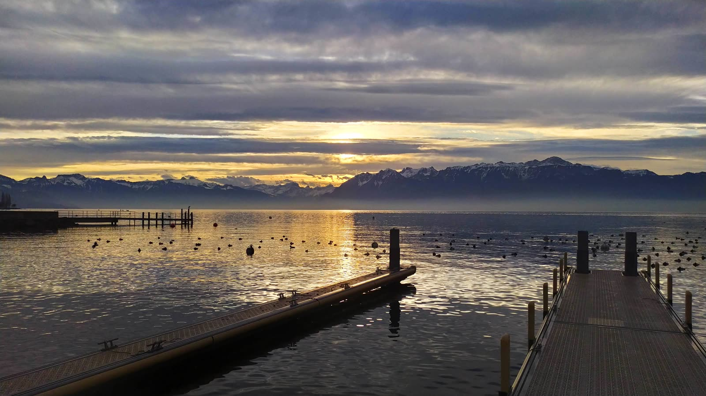

Kurz gesagt
Mein See verzeichnet 34 Buvetten und Restaurants am Genfersee, geprüft bei den Tourismusbüros und auf den Websites der Orte: von den Bains des Pâquis in Genf bis zu den Quais von Vevey, von der Guinguette de Vidy bis zum Strand von Sciez. Viele Buvetten sind nur in der schönen Jahreszeit geöffnet: Die Zeit ist angegeben, wenn sie bekannt ist.
Wo kann man am Genfersee etwas trinken oder essen?
Genf
- Buvette des Bains des Pâquis, Genf: Ganzjährig geöffnet: Fondue im Winter, Tagesteller im Sommer, die Füsse fast im Wasser.
- Tropical Corner, Cologny (von April bis Oktober): Wassersportclub direkt am Wasser seit 1981: Terrasse unter Palmen, Burger und Tapas, Wakeboard-Steg, Windsurfen und Paddeln.
- Restaurant de la Plage & Buvette, Genf: Auf Pfählen am Ende des Strands Eaux-Vives: Egli, Hotdogs und Glace.
- La Barje des Lavandières, Genf (von Mai bis September): Sommerbar an der Rhone mit Gratis-Konzerten, nur einen Katzensprung vom Hafen.
- La Perle du Lac, Genf: Pavillon im Park Mon Repos, grosse Terrasse mit Blick auf den See. Im Winter montags geschlossen.
- Hôtel du Parc des Eaux-Vives, Genf: Herrenhaus oben im Park, Blick auf See und Jura. Für einen besonderen Anlass.
- Auberge d’Hermance, Hermance: Dorf am See, 20 Minuten von Genf, regionale Produkte.
La Côte
- Hôtel du Lac, Coppet: Terrasse mit Seeblick, zwischen Genf und Nyon.
- Le Casino, Rolle: Schattige Terrasse an der Seepromenade und helle Veranda. Sonntagabend und montags geschlossen.
- O’Les Terrasses du Lac, Nyon: Rue de Rive, drei Räume und eine Terrasse mit Blick auf See und Alpen, vom Morgenkaffee bis zum letzten Drink.
- Restaurant de la Plage, Nyon: Seefisch und regionale Spezialitäten am Wasser, Sonntagsbrunch.
Morges und Lausanne
- Le Pavois, Morges: Restaurant des Hotels Mont-Blanc au Lac, Terrasse an den Quais von Morges.
- La Jetée de la Compagnie, Lausanne (von Mai bis September): Sommerbar auf dem Steg von Ouchy: Holzdeck, Grilladen und Sonnenuntergang.
- Hôtel-Restaurant de la Plage, Préverenges: Am Ende der Avenue de la Plage, sonnige Terrasse nur wenige Schritte vom grossen Sandstrand.
- La Guinguette de Vidy, Lausanne (von April bis September): Vor dem Bowl de Vidy am Wasser: Treffpunkt von Spaziergängern und Paddlern.
- Le Lacustre, Lausanne: Über dem Anleger von Ouchy: Holzofenpizza und Brunch am Wochenende.
- Bar du Beau-Rivage Palace, Lausanne: Der feine Drink, Terrasse unter den Arkaden mit Blick auf See und Alpen.
- La Générale, Pully (von April bis September): Bar am Hafen von Pully, Steintreppen bis zum See, daneben Beachvolleyball.
- Restaurant du Port de Pully, Pully: Am Hafen, mit Blick auf See und Alpen.
- Le Rivage, Lutry: Terrasse an den Quais von Lutry, Seefisch, am Fuss des Lavaux.
Riviera
- Hôtel des Trois Couronnes, Vevey: Panoramaterrasse der Belle Époque an den Quais von Vevey.
- Kju, Vevey: Restaurant, Bar und Club in einem Bootshaus aus dem 18. Jahrhundert, eine der schönsten Terrassen von Vevey.
- La Véranda (Grand Hôtel du Lac), Vevey: Terrasse über Hafen, See und Alpen, unkomplizierte Küche.
- La Terrasse du Petit Palais, Montreux (von Mai bis September): Die Terrasse des Montreux Palace, bei schönem Wetter mit Blick auf See und Alpen.
- Le Phare, Le Bouveret: Terrasse am See mit Blick auf den Sonnenuntergang, von 9 Uhr bis Mitternacht geöffnet.
- Café Helvetia « Au 17 17 », Saint-Gingolph: Grosse Terrasse über dem See, ganzjährig geöffnet.
- Restaurant Bellevue, Saint-Gingolph: Champ-de-la-Fontaine 1: schattige Terrasse mit rund 60 Plätzen und Blick auf den Lac des Brenets, Eglifilets und Forellen aus dem eigenen Becken.
Französisches Ufer
- Bar-Restaurant de la Plage municipale, Thonon-les-Bains (von Mai bis September): Mitten im Stadtstrand am Quai de Ripaille: Tagesmenü und lokale Spezialitäten, die Füsse im Wasser.
- Hôtel Restaurant de la Plage, Excenevex: Das ganze Jahr die Füsse im Wasser, Blick auf See und Berge, saisonale Hausmannskost.
- La Guinguette de la plage, Excenevex: Die Strandbar am grossen Sandstrand von Excenevex.
- Restaurant Plage Les Pêcheurs, Sciez: Eine Institution seit 1964: Terrasse mit den Füssen im Wasser unter hundertjährigen Platanen.
- Yacht Restaurant, Évian-les-Bains: Im Hilton am Quai Paul-Léger, mediterrane Küche mit Blick auf den See.
- Ô Lac, Neuvecelle: Hotelrestaurant in Grande Rive, Panoramaterrasse mit Seeblick.
- Hôtel-Restaurant du Port, Yvoire (von März bis Oktober): Mittelalterliches Dorf, Terrasse am Hafen auf der französischen Seite.
Sind die Buvetten das ganze Jahr geöffnet?
Nein: Viele öffnen nur von April oder Mai bis September, je nach Wetter. Die obigen Saisons stammen von den Tourismusbüros oder den Websites der Orte; Zeiten und Saisons ändern sich, ein Anruf vor dem Hingehen erspart Enttäuschungen. Der Reiter «Ausgehen» der App zeigt ausserhalb der Saison «Geschlossen bis…» an.
Fehlt ein Ort?
Der Reiter «Ausgehen» der App bietet ein kleines Formular, um eine Adresse vorzuschlagen; sie wird vor der Aufnahme geprüft. Um den Badeplatz nebenan zu wählen, siehe die Liste der Badeplätze und, in Genf, alle Badeplätze des Kantons.
Das Wasser des Sees im Moment
Die Wassertemperatur jedes Badeplatzes steht in der App Mein See, alle drei Stunden aktualisiert.